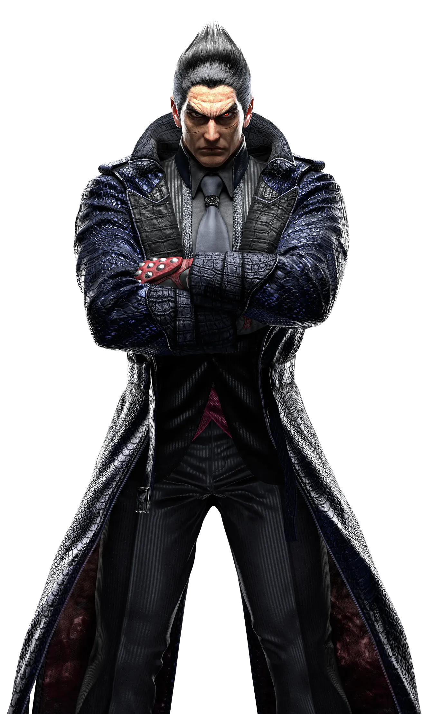
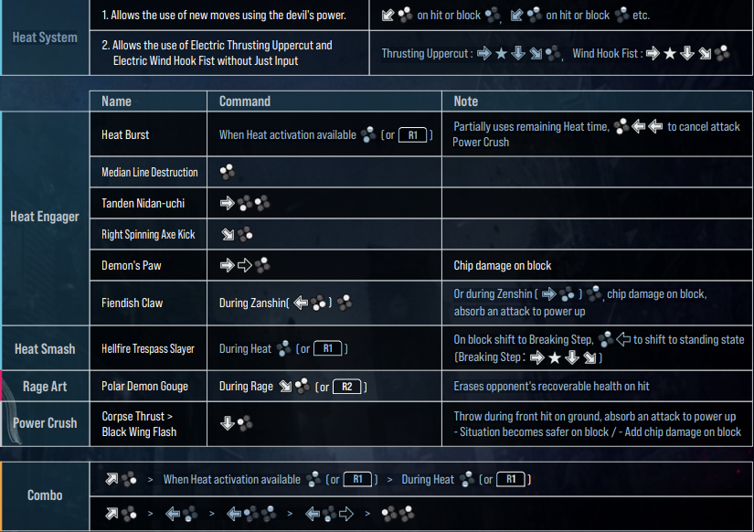

PROLOG
TEKKEN 8 melanjutkan saga tragis garis keturunan Mishima dan pertandingan dendam ayah-dan-anak yang mengguncang dunia. Saga terbaru ini dimulai dengan Jin Kazama menghadapi Kazuya Mishima dalam pertarungan langsung yang mengguncangkan kota
JIN KAZAMA
LIGHTNING OF FATE
Membenci darah terkutuk yang mengalir dalam nadinya, Jin Kazama berusaha untuk mengakhiri garis keturunan iblis. Dia bergabung dengan Lars Alexandersson, dan bersama-sama mereka bersiap untuk memulai Operasi Lightning, sebuah rencana untuk menghilangkan pemilik gen iblis lainnya, Kazuya Mishima. Jin pernah menjatuhkan dunia ke dalam kekacauan untuk membangkitkan Azazel, nenek moyang gen iblis. Rencananya adalah untuk memadamkan gen iblis secara permanen dengan mengalahkan Azazel sekali dan untuk selamanya, meskipun itu akan mengorbankan nyawanya sendiri. Meskipun Jin berhasil mengalahkan Azazel, dia kehilangan kesadaran dan jatuh ke dalam tidur yang sangat dalam. Selama absennya, G Corporation, yang dipimpin oleh Kazuya, mengambil alih dunia dengan kekerasan. Beberapa bulan kemudian, Jin akhirnya mendapatkan kesadarannya kembali. Perjuangannya yang mematikan dengan Azazel telah mengajarkannya cara mengendalikan kekuatan iblis batinnya. Jin bersumpah untuk mengakhiri pemerintahan teror Kazuya sebagai penebusan atas perang dan kehancuran yang telah dia sebabkan.
ESENSIAL MOVELIST
PROFIL
| Nama | : Adam Atma Wiguna | |||
| Kelas | : IF-7 | |||
| Nim | : 10123284 | |||